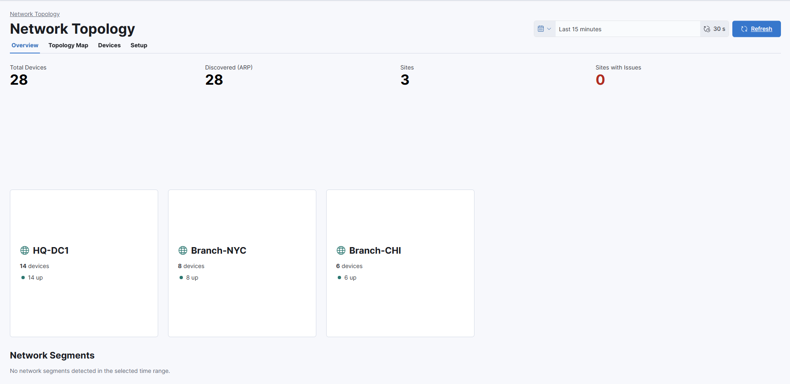
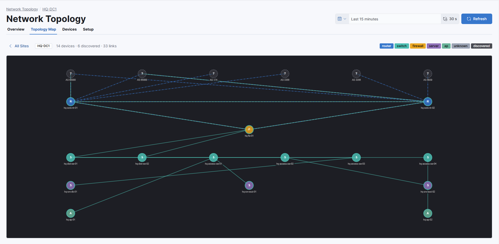
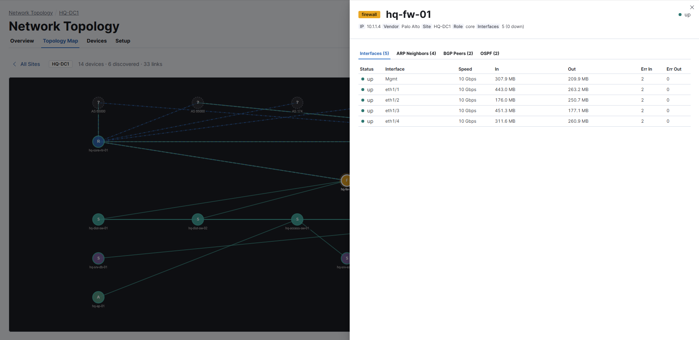
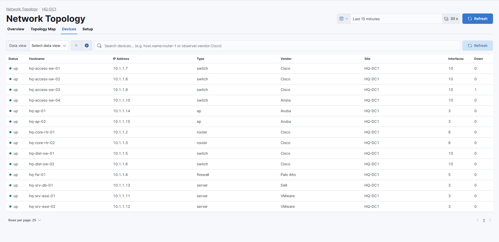

Tutorial: Monitor your network devices with the Network Topology plugin
editIn this tutorial, you’ll install the Network Topology plugin in self-managed Kibana, configure Logstash to collect SNMP data from your network devices, and explore site, device, and routing protocol state in Kibana.
This tutorial is for network engineers and IT operations teams who are familiar with SNMP and want to monitor their network devices with Observability.
What you’ll learn
editYou’ll learn how to:
- Install and configure the Network Topology plugin in self-managed Kibana 8.19.
- Configure SNMP data collection using Logstash.
- Verify data is flowing into Elasticsearch.
- Explore network topology, device health, and routing protocol state in Kibana.
Before you begin
editYou need:
- Self-managed Kibana 8.19.12+ and Elasticsearch 8.19.12+. The Network Topology plugin is not compatible with Elasticsearch Service or Elastic Cloud Serverless.
- Installation requires system or root level access on the node running Kibana.
- One or more network devices with SNMP v1, v2c, or v3 enabled.
- Logstash installed and able to reach your network devices.
If you don’t have SNMP-enabled devices to point at yet, you can evaluate the plugin against simulated data using the sample data generator and Docker Compose dev environment included in the Network Topology plugin repository.
Step 1: Install the plugin
edit-
Download the latest Network Topology plugin release
.zipfrom the plugin releases page on GitHub. - Unzip the plugin bundle.
-
Open the
kibana/networkTopology/kibana.jsonmanifest file included in the bundle. -
Locate the
kibanaVersionproperty and replace the placeholder value with your exact Kibana version. Save the file. -
Re-zip the plugin bundle, preserving the
kibana/networkTopologyfolder hierarchy. If the folder structure changes, installation will fail. -
From the root of your Kibana install directory, run:
bin/kibana-plugin install file:///absolute/path/to/networkTopology.zip
- Restart Kibana.
Troubleshooting: plugin installs but doesn’t load
editIf kibana-plugin install reports success but the Network Topology plugin doesn’t appear in Kibana, check the file permissions on the Kibana plugins/ directory. The plugin files must be readable by the user that Kibana runs as. Correct the ownership or mode of the plugin directory and restart Kibana.
Step 2: Apply the index templates and ingest pipeline
editThe plugin’s Setup tab walks you through installing the snmp-device-enrichment ingest pipeline and the logs-snmp.topology@template index template. Install these before you start sending data so that the first documents are enriched and mapped correctly.
- In Kibana, navigate to Observability → Network Topology and select the Setup tab.
-
Under Step 1 — Install Index Template & Ingest Pipeline, select Open in DevTools next to the ingest pipeline, then click the run button (▶) to apply it.
Install the pipeline first because the index template references it as the default ingest pipeline.
- Repeat for the index template.
Step 3: Configure SNMP data collection using Logstash
editThe Network Topology plugin reads from an Elasticsearch data stream that Logstash populates using the SNMP input plugin.
-
Create a Logstash pipeline using the
logstash.confreference provided in the Network Topology plugin repository. Edit the SNMP input to list your devices, credentials, and polling interval, and edit the Elasticsearch output to point at your cluster.For details on the fields you’ll configure in this pipeline, refer to Location and role metadata fields.
- Start Logstash with your pipeline configuration. If you use Logstash centralized pipeline management, you can push the pipeline directly from Kibana instead — no SSH access to a Logstash host required.
Troubleshooting: common SNMP input errors
editProblems with an SNMP get, walk, or table operation cause the following error in the Logstash log:
error invoking 'walk' operation: error sending snmp walk request to target <ip>:<port>: Request timed out., ignoring. {host=<ip>:<port>, oids=[<oid array>]}
Check the following:
- Wrong community string or v3 credentials — verify the community string (v1/v2c) or username and password (v3) in your Logstash pipeline config are correct.
- Incorrect target IP or port — confirm the device IP and SNMP port are correct.
- Device is unreachable or down — confirm the device is up and available.
Step 4: Verify data in Kibana
edit- In Kibana, navigate to Observability → Network Topology. You can also use the global search field.
- Confirm the page shows your configured sites and the network segments that have been discovered.
Step 5: Explore the Network Topology plugin
editThe plugin gives you the following views into your network: a site-level health summary, an interactive topology map, a per-device detail flyout, and a searchable device inventory.
Site overview
editThe site overview shows a grid of health cards, one per site. Each card summarizes the state of the devices in that site.

Topology map
editThe topology map builds an adjacency graph from the ARP, MAC forwarding table, BGP, and OSPF data the plugin has collected, and renders it as a force-directed layout. Zoom, pan, and drag nodes to lay out the view, and toggle the L2, L3, BGP, and OSPF layers to focus on a specific protocol. Link colors and styles indicate state.

Device detail
editClick a node in the topology map to open the device flyout. The flyout shows the interface table, ARP neighbors, BGP peers, and OSPF adjacencies for the selected device.

Device inventory
editThe device inventory is a searchable, paginated list of every device the plugin has discovered. Filter the list using KQL to answer operational questions, for example:
- Find every BGP session that isn’t established.
- Find Cisco switches that have interfaces that are administratively up but operationally down.
